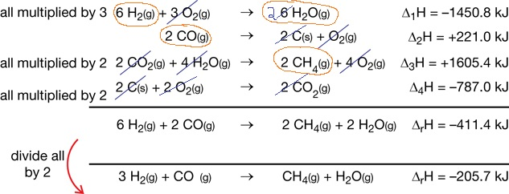

Module 1—Thinking Energy
Explore
 Read
Read
In Lesson 2 you used a calorimeter to measure the enthalpy of a reaction. You also learned that by using a bomb calorimeter you can improve the reliability and range of reactions that you can investigate. However, is it possible to measure the enthalpy change of every reaction using a calorimeter? Is it possible to use your understanding of chemical potential energy to explain why energy changes occur during chemical reactions? Have you considered how this understanding might be used to determine the enthalpy change for a process if it cannot be done experimentally?
Read pages 502–503 in the textbook to learn about Hess’ law.
 Self-Check
Self-Check
SC 1. Identify two instances in which it is difficult to determine the energy change for a reaction experimentally using equipment normally found in a high school laboratory.
SC 2. Sketch “Figure 2” on page 503 of the textbook. Add details to your sketch to
- identify the separate reactions (steps) in the process
- explain why the overall enthalpy change is only -110.5 kJ, not
-393.5 kJ
Self-Check Answers
Contact your teacher if your answers vary significantly from the answers provided here.
SC 1. It may not be possible to determine the energy change for a reaction experimentally if the reaction occurs too slowly, if equipment is unavailable, or if there are safety concerns.
SC 2.
The overall change is -110.5 kJ, which represents the difference between the initial and final potential energies of the reactants and the final product. The sum of the reaction enthalpies is -110.5 kJ.
 Try This
Try This
Use your answers to the Self-Check questions and the information in
your textbook to demonstrate your understanding of Hess' law by
answering the following questions.
Consider the following information about a theoretical chemical system:
Reaction 1: AB → A + B ΔrH =
+75 kJ
Reaction 2: A + CD → AC + D ΔrH
= -50 kJ
Reaction 3: BD → B + D ΔrH =
-125 kJ
Net Reaction: AB + CD → AC + BD
TR 1. Demonstrate how reactions 1–3 can be combined to yield the net reaction.
TR 2. Demonstrate how reactions 1–3 can be depicted on
a potential energy diagram such that the enthalpy change for the net
reaction is depicted.
TR 3. Demonstrate how the enthalpy change for
reactions 1–3 are combined to result in an enthalpy change for the net
reaction.
Read
Work through “Sample problem 11.4” and “Communication example” on pages 503–504 in the textbook.
 You
may go to the website for your textbook to listen to the explanation of
“Sample problem 11.4.” Contact your teacher for instructions on how to
access this website.
You
may go to the website for your textbook to listen to the explanation of
“Sample problem 11.4.” Contact your teacher for instructions on how to
access this website.
Review the “Summary” on page 504 of the textbook for clarification of the process used to solve these problems.
Self-Check
SC 3. Complete “Practice” questions 1–4 on pages 504–505 of the textbook.
Self-Check Answers
Contact your teacher if your answers vary significantly from the answers provided here.
SC 3.
Practice 1.
Practice 2.
Practice 3.
Practice 4.

Try This
To some people, the most important rules for Hess’ law are as follows:
- If the chemical reaction is reversed, then the sign of the change
in enthalpy is reversed.
- If the coefficients of the chemical reaction are altered, then the change in enthalpy is also altered by the same factor.
It is easy to memorize these rules, but it is important to do more than memorize them—you must understand them.
TR 4. Write explanations that identify the scientific principles associated with each of these rules and state why these rules need to be considered when using Hess’ law.
Check
your answers to the TR questions